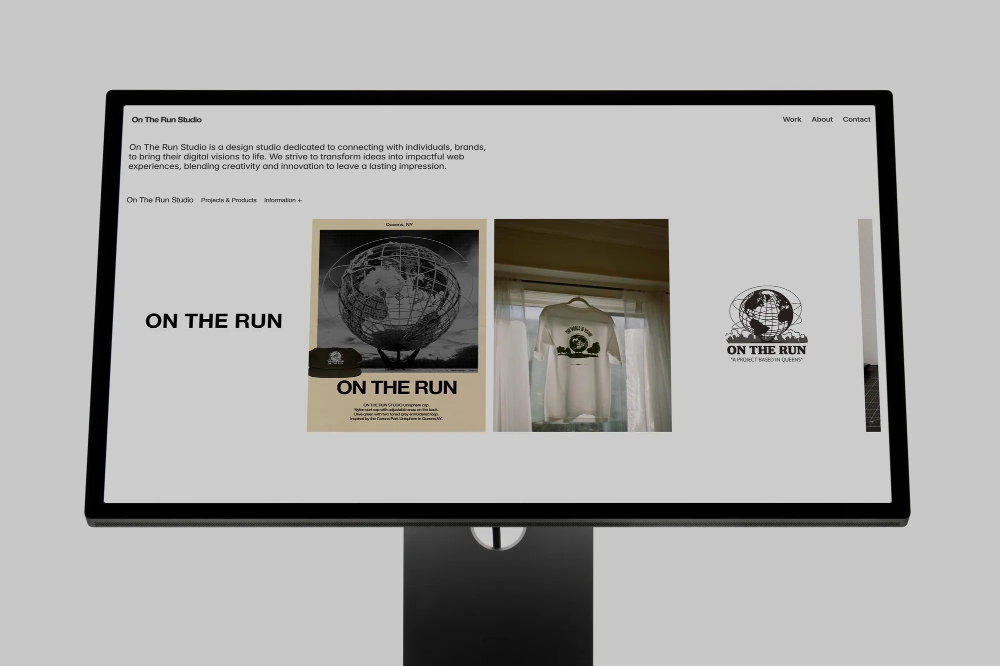
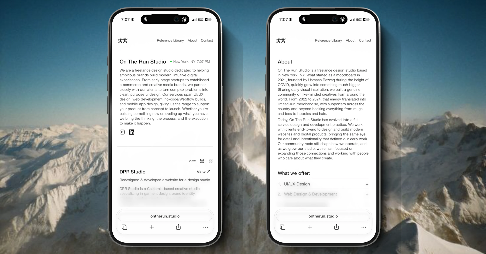
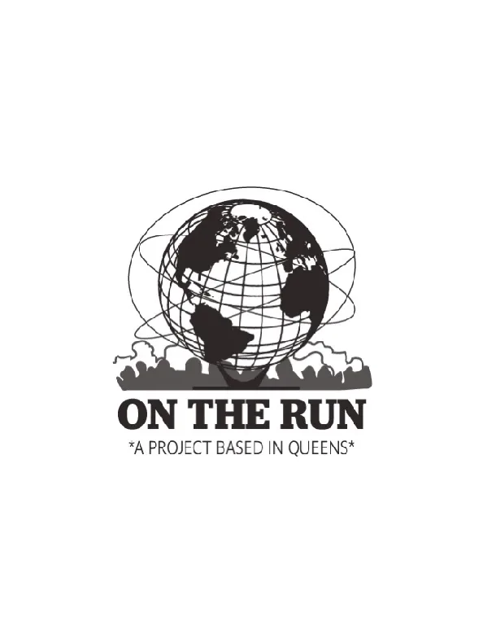

On The Run Studio is a design studio that began as a personal project to curate and share images that inspired me and my work. Over time, the page grew and built a community of like-minded individuals who found inspiration in the posts. Along the way, I designed and produced products and merchandise inspired by these influences. On The Run Studio will continue to share, inspire, and grow the community while connecting with brands and companies to assist in web design and development.
On The Run Studio
Creating a brand and a Design Studio

Overview
What is On The Run Studio?

On The Run Studio Mobile UI
Merchandise
For 2 and a half years, I designed and produced merchandise that was inspired and influence by my upbringing and also the images I had curated. I started off with a t-shirt and a mug. For the t-shirt, I created a design that was simple and clean, The graphic was inspired by the Unisphere in Flushing, NY. For the mug, I placed the early On The Run Studio logo on the front.





On The Run Studio Products
Web Development
The On The Run Studio website was hosted on Shopify initially for the first year and a half. The following year, I decided to redesign and host the website on Squarespace. This version of the On The Run Studio website was used for another year and a half. After that, I decided to redesign the website again but this time it was hosted on Framer. This version of the website was used for a few months. Currently, the website is being redesigned and developed by me. It is hosted on my own domain and is being developed with HTML, CSS, and JavaScript.
Design Studio
On The Run Studio is continuing as a design agency to assist brands and companies to strategically design and develop their websites. The agency provides a full-service design and development solution, from initial design to launch and ongoing maintenance.